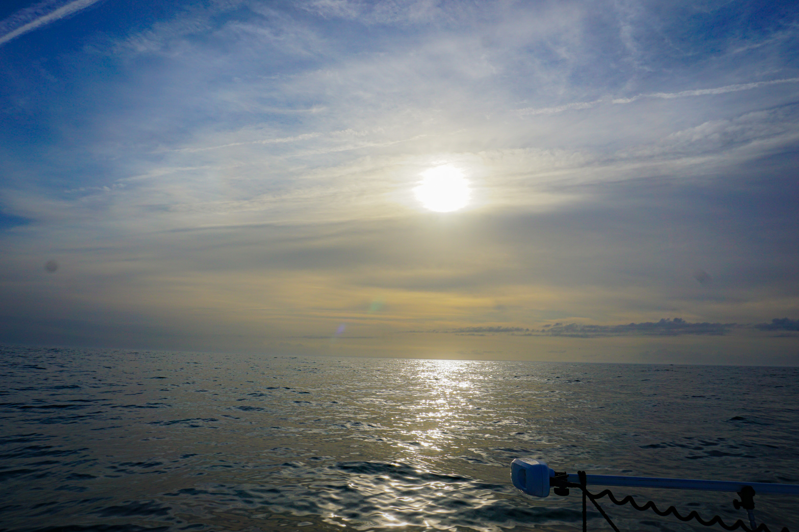
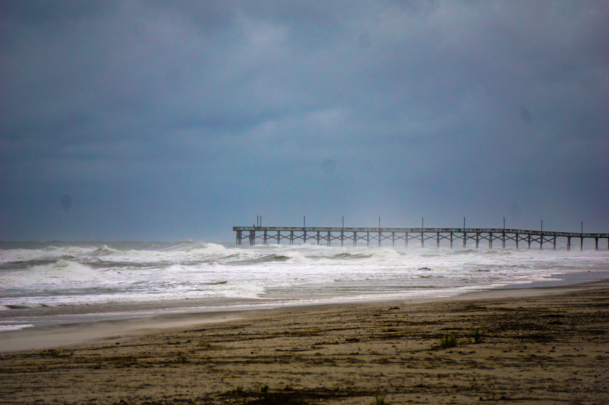

Education and Career Page
As mentioned earlier, I am currently going through Wake Technical Community College, working towards an Associates degree in
"Information Technology, Cybersecurity". I don't know very much about the subject yet, but I have heard it's a growing field for new workers.
I plan on continuing my education at University of North Carolina, Wilmington where I will finish my Bachelors degree.
In reality, I'm working towards this degree in an effort to join the Navy while qualifying to train for an Officer position. The job I have aspired
to join for the past 4 years now is a Navy Seal. When I first considered the opportunity, I planned on joining as an Enlisted soldier straight out of
high school, however I never seemed to realize the scale of difficulty I was trying to overcome, so I waited. I gave less effort in classes
and focused more on my physical capability. While this is an important factor to even qualify for the training, I failed to realize the opportunity
I had to become better than the average enlisted. The schooling I had access to could give me a window towards something even better
than my original "life plan". The strangest part about this realization was that I believed, and still believe, I could succeed.
I have not felt this passionate or confident about a goal like this before, so I am currently in the scratch, turning this pipe dream into a reality.


I feel the career I'm working towards can also fuel my love for beaches, travel, and the ocean. I found a majority of my photos handle scenes
from the coast, and the biggest part of my dream career takes me straight to the sand, so I look forward to my nearing future.
I am also trying to wrap my head around the suffering in store for me. This suffering will not be the cause of a regression though, but rather growth.
I want to work harder than I ever have before, both physically and mentally, and to do this I need to "suffer". I know it will be the only effective way
for me to grow, and it will be difficult but I look forward to the challenges ahead.
Links to Following and Previous Pages
Home Page
Personal Page
Contact Page